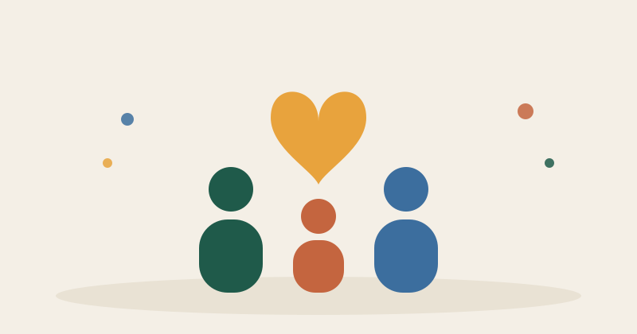

Mucha gente quiere ayudar a personas con discapacidad y no sabe por dónde empezar. Esta guía explica cómo funciona el voluntariado, en qué se diferencia de ser socio o donante, y qué entidades de Madrid cuentan en su web cómo colaborar con ellas.
Voluntario, socio o donante: qué es cada cosa
- Voluntario o voluntaria: das tu tiempo, sin cobrar, en las actividades de una entidad.
- Socio o socia: pagas una cuota cada cierto tiempo. Según la entidad, también puedes participar en su asamblea o recibir sus novedades.
- Donante: aportas una cantidad, una vez o de forma regular, sin ser socio.
No hay que elegir solo una. Muchas personas empiezan como voluntarias y, con el tiempo, se hacen socias.
Qué debes saber antes de hacerte voluntario
En España el voluntariado está regulado por la Ley 45/2015. Esto es lo básico que te garantiza:
- Es gratuito: no se cobra por hacerlo, aunque la entidad puede devolverte los gastos que te cause la actividad.
- Firmas un acuerdo por escrito con la entidad, donde se recogen tus compromisos y los suyos.
- La entidad debe darte la formación que necesites y cubrirte con un seguro de accidente y enfermedad.
- Si tienes 16 o 17 años, necesitas el consentimiento de tu familia o tutores. Si tienes entre 12 y 15, necesitas su autorización expresa.
- Si la actividad implica contacto habitual con menores, la entidad te pedirá un certificado negativo del Registro Central de Penados.
Puedes leer el texto completo en el BOE.
Entidades de discapacidad en Madrid donde puedes colaborar
No es una lista completa de Madrid. Son entidades que explican en su web cómo colaborar con ellas. Hemos revisado esas webs en octubre de 2026, pero las condiciones cambian: confirma siempre los detalles con la entidad antes de comprometerte. Todos Cuentan no ha recibido ningún pago por incluirlas.
Down Madrid
Entidad que trabaja por la inclusión de personas con discapacidad intelectual. Su página de voluntariado ofrece colaborar en actividades de ocio, deporte y talleres de arte y cultura, con horarios que se adaptan a tu disponibilidad. Para apuntarte, rellenas el formulario "Quiero ser voluntario en Down Madrid".
Si prefieres colaborar con dinero, en su página de donaciones puedes dar una cantidad puntual o hacerte "Amigo de Down Madrid" para aportar de forma periódica. También puedes elegir a qué proyecto va tu aportación, por ejemplo atención temprana, formación o empleo. Teléfono: 91 387 67 90.
Plena Inclusión Madrid
Federación de entidades de personas con discapacidad intelectual o del desarrollo. Cuenta con una red de más de 2.700 personas voluntarias. En su página de voluntariado se explica que escuchan lo que buscas, te orientan hacia la entidad que mejor encaje, te ofrecen formación y te acompañan durante la actividad. Para empezar, rellenas el formulario online.
Algo poco habitual y muy valioso: también facilitan que las propias personas con discapacidad intelectual sean voluntarias. Contacto: info@plenamadrid.org · 91 501 83 35.
Autismo Madrid
Federación de entidades del ámbito del autismo. Su página de voluntariado reúne las ofertas de varias entidades federadas, con actividades como ocio de fin de semana, apoyo en actividades entre semana y campamentos. La federación ofrece además una formación básica para quien empieza. Para informarte, escribe a voluntariado@autismomadrid.es.
Círvite
Entidad madrileña con programa de respiro y acompañamientos. Según su página para particulares, puedes hacerte socio o socia por 8 euros al mes, con lo que participas en la Asamblea General y recibes sus novedades. También hay una aportación mensual mayor y la opción de dejar un legado en tu testamento. Para preguntar por voluntariado, llama al 91 324 92 93 o escribe a info@cirvite.org.
ADILAS
Asociación de Alcobendas que trabaja con personas con discapacidad intelectual límite. Una aclaración importante: en su página de socios y socias, ser socio o socia es para las propias personas con ese diagnóstico, que se asocian para participar en las actividades. Si quieres colaborar desde fuera, su página de contacto indica que están abiertos a colaboraciones con particulares, empresas e instituciones. Correo: infoadilas@gmail.com.
Cómo desgravar tus donaciones
Si donas a una entidad sin ánimo de lucro, puedes pagar menos en la declaración de la renta. Según la Agencia Tributaria, estos son los porcentajes que se aplican desde 2024:
- 80% de los primeros 250 euros que dones.
- 40% de lo que superes esos 250 euros.
- 45% si llevas al menos tres años seguidos donando a la misma entidad, con importes iguales o mayores cada año.
Un ejemplo: si donas 300 euros, desgravas 200 euros (el 80% de 250) más 20 euros (el 40% de los 50 restantes). En total, 220 euros menos en la cuota.
Antes de donar, pregunta a la entidad si su donativo da derecho a deducción y pide el certificado de donación para tu declaración. Estas cifras son las vigentes según la Agencia Tributaria; compruébalas antes de presentar tu declaración. Esto no es asesoramiento fiscal.
Cómo elegir la entidad que mejor encaja contigo
- ¿Con qué colectivo quieres colaborar? Discapacidad intelectual, autismo, otras discapacidades… Cada entidad trabaja con personas distintas.
- ¿Cuánto tiempo y en qué horario puedes comprometerte? Es mejor prometer menos y cumplirlo.
- ¿Dónde está? Una entidad cercana hace más fácil mantener la constancia.
- ¿Te explican la formación y el seguro? Una buena entidad te lo cuenta desde el principio.
¿Eres una entidad y quieres que tu página de voluntariado o de socios se entienda a la primera? Ayudamos a explicar cómo colaborar con lectura fácil y mensajes claros, para que más personas den el paso.
Hablar con Todos Cuentan